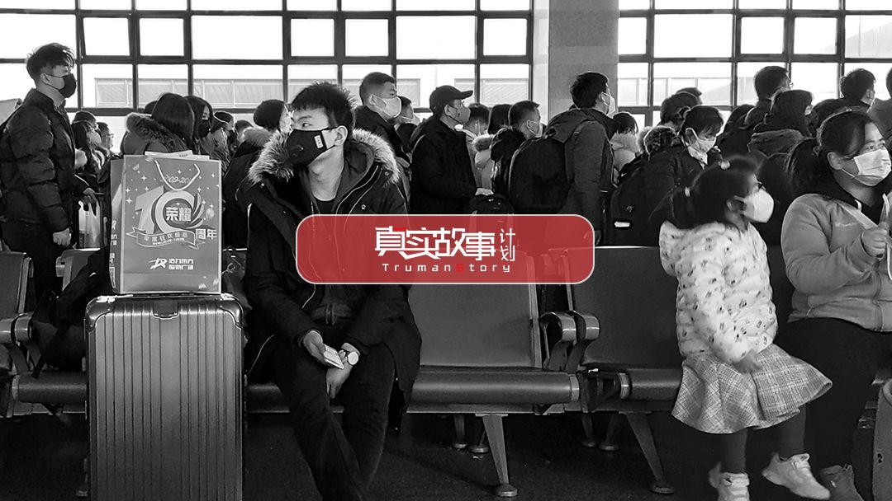
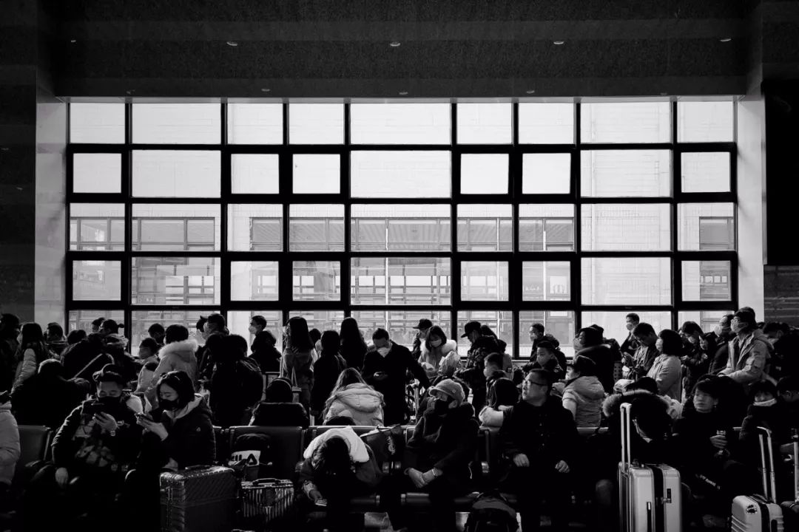
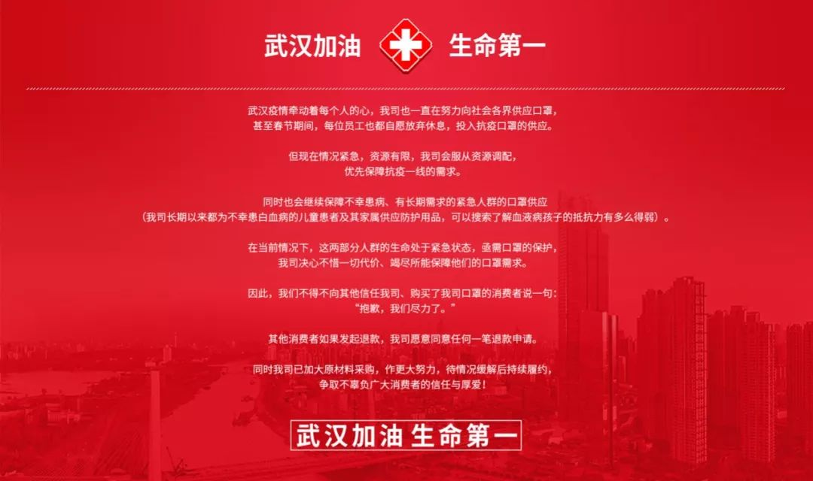

10000个临时发往武汉的口罩
原文链接 备份链接 几位口罩行业的从业者，都是在大量微信、电话疯狂轰炸的间歇，接受我们采访的。所有人的语速都异常急促——在过去的一周时间内，他们接过工信部、各地应急办、市级政府的电话；也接过各省医院、药店、大小代理商的电话；还有从未打过交 …

只用了8天的时间，一家淘宝店的日销售额从5000多元暴涨到9000多万元。这是新冠肺炎爆发后，疯狂膨胀并异化的口罩市场现状。
疫情突然袭来，口罩这个又小又简单的日用品，成了人们四处抢购的必需品。当药店、超市难以满足需求，现实条件又不允许四处寻货时，海量的需求开始在网络汇聚。
和潮水般的口罩需求一起涌来的，还有焦灼的社会情绪。串联起闭门在家的消费者、紧急复工的工厂和庞大物流网络的网店，则成为需求和情绪输出的终端。
数以万计的淘宝商家，经历了口罩订单暴增、库存又迅速告罄的焦虑，以及订单被大规模临时征用后无法及时发货的失信危机。
面对倍增的投诉甚至谩骂指责，以及来自电商平台“过分严厉”的监管，有的商家觉得反正找货困难，索性把存量口罩捐赠，不卖了。
也有人选择多坚持一会儿。在北京通州郊区的一处民宅里，李凤三已经在电脑前守了半个月。
订单数字背后的疫情脉络
李凤三没想过，卖口罩也会迎来所谓的风口。
经营淘宝店11年，他一直守着这个小众门类，供应N95、KN95口罩和普通一次性口罩。除了雾霾季，多数时候每天的营业额在五六千元左右，生意也还过得去。
凭借多年的销售经验，李凤三发现口罩的销量和天气、流感等疾病有密切的关联。
2019年12月31日这天，店里的销售额超过了1万元，是平常的两倍。
这一异常引起李凤三关注，把订单的收货地址拉出来一看，发现一个共同点：订单都流向了武汉。
他赶紧查阅和武汉有关的新闻，看到了武汉市卫健委发布的消息：“近期部分医疗机构发现接诊多例与华南海鲜城有关联的肺炎病例，经专家会诊系病毒性肺炎”。李凤三立即通知物流和仓储工作人员，查看库存并备货。
不过第二天，武汉现不明肺炎的消息就平息了，店铺的订单量也开始回落。李凤三就没再继续关注武汉情况，和大家一样开开心心地迎接新年。
几乎没有人想到，口罩会在20天后成为最紧俏的商品。
1月20日，店铺销量再次翻番、超过1万元的时候，员工们正在讨论春节放假。他们不知道，订单数字即将开始巨变，一场飓风正在酝酿。

图|新冠肺炎疫情正赶上春运
在此之前，新冠疫情的信息不明，但一些敏感人群已开始戴口罩上下班。当日晚间，钟南山院士面对媒体确认了“人传人”消息，舆论瞬间引爆，线下药店和超市里的口罩短时间就被一抢而空。
“新闻发布仅两个小时，平台的小二就在钉钉群里提醒商家，说情况变得紧急，要求我们必须立即查看库存和产能能否跟得上，不能超卖。”李凤三回忆说。
一天内疫情信息不断：武汉成立新型冠状病毒感染的肺炎疫情防控指挥部；上海、北京、广东首次确认出现新型冠状病毒感染的肺炎案例；国家卫健委发布1号公告，将新型冠状病毒感染的肺炎纳入乙类传染病，并采取甲类传染病的预防、控制措施……
按照电商平台要求盘查库存之后，李凤三隐隐有点兴奋。他甚至在设想，只要供货跟得上，顺着这样发展势头，很快就能在行业崭露头角。但一想到“发国难财”这几个字，他的兴奋劲又消退了。
这一天，店铺卖了11万元，这是平时的20倍。李凤三并不知道，这只是疯狂的开始。
“很多人几十盒几十盒的下单”
从1月20日开始，店铺的销售额开始疯狂跳涨。
当前国内口罩日产量约2000万只，这个数字放到巨大的人口基数里，缺口显而易见。
22日全天卖了24万元，23日飙升到100多万元，24日500多万元，25日800万元。26日，一下子突破了6000万元，这是平常的10000多倍……
因为有长期合作的工厂，李凤三起初一直充满信心，但看到人们如此疯狂抢购口罩，许多人都是一次几十盒地下单，他心里有点没底了。
李凤三开始纠结要不要将商品下架。他简单做了下分析，就打消了这样的念头，他知道一点：订单量越多，意味着更多人想得到防护，“一旦下架，会不会给社会造成恐慌，是不是物资价格要涨？还能否买到口罩？店铺是不是要携款潜逃？”
他马不停蹄地把电话一个个打给工厂和原材料供应商，直到对方同意帮自己优先生产。为了以防万一，1月24日起，李凤三将口罩由现货变为预售，他希望通过20天的预售期来防止出现不能及时发货的可能性。
春节放假的员工全部被动员起来了。仓储本来只有三四个发货人员，直接加了十个人。两个客服从轮流值班到同时加班，之后又增加了十几个人。
许多地方封城，除了仓储部门，大部分员工都只能在家办公。下载订单的人员说，因为打印的订单多，电脑经常死机。
客服小妹妹打字的手指磨出了泡，一分钟的时间里每个旺旺账号都涌入几万人，聊天软件一次次崩溃。遇到投诉，她急得打电话给李凤三，一边哭一边说：“我是真的回复不过来呀……”

图|疯狂涌入的订单
面对汹涌袭来的需求大潮，李凤三和团队注定不是在独自战斗。
网络的另一端，电商平台的技术、运营和风险管控人员也在各地的家中就地加班，在保障商家顺利经营的同时，快速干掉那些“发国难财”的店铺，实现让商家安心卖，让消费者放心买。多年的经验让李凤三明白，淘宝会通过人工智能模型评估筛选正品货源充足和服务能力强的商家，让他们优先发布口罩类商品。在疫情的非常时期，这也是自己的机会。
然而，口罩在日常是个冷门产品，平台在几天的时间内卖出了几年的销量，人工智能系统可使用的历史数据有限，大量评估工作得依靠人肉完成。
“每天说的最多的就是不准涨价，不能超卖和风险预警。”李凤三每天要和平台小二反复打电话沟通订单情况和质量问题，非常时期违规从严处罚的警告几乎成了口头禅。

“你们卖的口罩是假货”
当人们在家门口的药店和超市无法买到口罩，海量的需求夹杂着急切躁动的情绪，一起扑向了网络。
李凤三和那些四处调货、坚持售卖口罩的同行们，成为这些需求和情绪的发泄终端。
1月26日，有网友在论坛上发帖说，李凤三店里的口罩是假货，一时间，跟帖无数、骂声四起。
李凤三觉得委屈，他将工厂生产资质和自家店铺销售口罩的资质证明材料拍了照，发到了网上，试图自证清白。
巧合的是，阿里安全在26日公布了问题口罩店铺处理情况，7家店铺分别涉嫌哄抬物价、疑似销售假冒3M口罩、商品过期或劣质口罩以及发货异常问题被处理。
李凤三的店铺，并不在这个名单之内。事后他和小二沟通时偶然得知，阿里安全的风控大脑对他的店铺实施了24小时不间断检测，每一件上架产品和每一条买家评论都会经过假货风险评估，“一旦违规肯定会被干掉重罚。”
疫情的紧张形势，让公众对于口罩问题异常关注，假货投诉成了情绪发泄的出口。商家们对近期口罩居高不下的假货投诉率十分不解，仔细调查后他们发现，绝大部分关于假货的投诉举报，是没有实质证据、一拥而上的情绪化举动。
春节期间由于原材料短缺、人工不足等原因，一些商家赶工生产出合格的口罩，却因为包装简陋被误认为三无产品，被指责为假货；
有的商家忙中出错，仓库发货把口罩的品牌搞混了，即使口罩的质量没有问题、商家也有相关的资质，但在紧张的气氛下很少有人能耐心地听解释；
有同行因为库存被征用，下架了部分商品，买家不停地留言：黑心售假商家，你们不会是携款跑了吧？
由于公众关注度过高，一些谣言被不加求证的转发和不分青红皂白的指责，让多年来公众和网购之间逐渐积累起来的信任关系重新变得脆弱。
李凤三的店铺被指责售假，是因为无意之中配错了一张图片。在和最初发帖的博主沟通解释后，博主主动在论坛做了澄清。没想到，这次假货乌龙事件的化解，也在无形之中给销售做了一波助推，订单量又开始暴增。1月27日那天，单日销售额达到了9000万元。
“大家都跟疯了似的抢，很多人就是为了囤着。”客服小妹妹说。
合作工厂被临时征用怎么办？
李凤三带着小团队忙疯了，订单暴增的压力从单个淘宝店传导至整个公司。公司总经理直接打电话给李凤三：“我现在听你调配。”
1月27日，销售额达到了9000万元，总经理却接到家里的电话，奶奶病危。他急急忙忙赶回去，没见上最后一面，老人已经走了。
疫情形势一天比一天严峻，总经理仓促办完奶奶的丧事，红着眼圈又火速赶往厦门的工厂。
1月20日以后，为店铺供货的口罩工厂从之前稳定合作的两个，变成了四个，三个在厦门，一个在江苏。总经理走访了厦门的三个工厂后，告诉李凤三，产能可以放心。
李凤三心里的石头刚刚落了地，当晚一纸红头文件又给了他当头一棒。厦门生产口罩的工业区整体被当地政府征用，所有防护口罩将作为应急物资由政府调配，预售的订单面临发不出货的窘境。
口罩紧缺的时候，产能和分配成为舆论的焦点。
普通民众不明所以，一方面质疑一线医护人员的防护物资不足，一方面为自己买不到口罩而惊恐万状。殊不知，网店被征用的生产源头，正是由政府统一调配给一线的医护人员和病患使用。
这天，李凤三还漏掉了一条信息：国务院办公厅通知延长三天春节假期。这意味着工厂和物流的复工时间可能会推迟。
李凤三和工厂最后达成一致意见：紧急招工或劝工人返工，加班加点，在满足征用产能前提下，竭尽所能来满足他们的订单需求。由此额外产生的工人工资、加班费、物流等费用，均由店铺承担。快递本来也是要涨价的，看到他们整个店铺的发货量，主动说按原价给发货。
遇到顾客因为收不到货发起投诉，李凤三只能逐一电话回复道歉，说明具体情况，解释发货时间不确定，“你实在着急，我把款退了吧。”让他欣慰的是，顾客撤回了投诉并表示不退款：“我等你发货，以后备着用。”
有顾客说，线上药房和线下药店都缺货。好不容易在网上抢到了，又被取消了发货，理由是“政府调用防疫物资，订单无法继续派送”。朋友圈里不明真伪的货源倒是有一些，但真假无法辨别，因为信任，还是想到李凤三的淘宝店碰碰运气。
优先给最需要的群体发货
在“全民战疫”的背景下，原先口罩的固定使用群体却很少受到关注。
1月30号晚上，李凤三处理了一个特殊的订单。广东东莞，一批白血病儿童刚做完手术，需要防护口罩。有20多个孩子，总共需要口罩数2000个。

图|白血病儿童家属发来求助信息
自从订单暴涨后，为了缓解供应压力，李凤三开始把预售期从20天延长到30天。即便是这样，仍然有源源不断的订单积压，发不出货。
李凤三看着电脑后台的订单想了又想。目前，自家的口罩都优先向一线的医务人员供给，普通消费者的发货时间遥遥无期，投诉和差评早就一大堆了。销售额越高，店铺需要承担的责任也越多。
怎么办？“那是孩子用来保命的啊。”李凤三通知库房，给远在东莞那家医院的白血病孩子们，发去了2000个防护口罩。
在我们国家每年约400万的白血病患者中，一半是儿童。虽然目前治愈率已经达到了98%以上，但他们面对病毒的抵抗能力依旧很弱。
李凤三负责的店铺，从2014年开始就和各地的医院及公益组织对接，为这些患白血病的孩子免费捐赠日常所需的口罩。
公司的公益负责人和李凤三沟通时说，在疫情期间，为了让不幸患上白血病儿童的生命安全继续得到保障，已经陆续给1000多个患病儿童赠出6万多只口罩。
然而，一线医护人员的口罩需求，也频频亮起了红灯。
有医护人员称，很多医院的医用外科口罩库存量大概在一个星期左右。疫情全面袭来，全民疯抢口罩，完全不够充足的库存和脆弱的供应系统，一下子就垮掉了。
医疗前线的口罩供应有这么大一个缺口，对于普通百姓而言，口罩就更难买到了。李凤三看新闻，有的地方药店需要凭身份证购买口罩，N95口罩一人限购3个，但库存一上架就会售空。售空后，排着队的顾客也不肯走，眼巴巴等着下一批来货。
可李凤三也知道，对于这些孩子和那些在一线奋战的医护人员来说，口罩是他们与死神之间的最后一道防线。而这道防线，相当一部分握在像他这样的口罩商家手里。
“只能暂时把线上订单的发货再往后延了。”他说，真的没办法，他们比普通人更需要口罩。

“在生命安全面前，任何利益一文不值”
过去的十几天里，李凤三从最初的兴奋到如今面临两难境地，心情焦灼。
为了配合政府征用物资的调配，他想再次把口罩下架，可是用户的投诉一定会铺天盖地地涌过来，多年沉淀下来的品牌可能毁于一旦，人们购买口罩的一丝寄望也会被抹杀。
李凤三决定，也和线下药店一样做限购。
这是最后的办法。如果疫情继续，更多工厂被征用。到时候，就再也没有口罩可供发货了。限购和延期发货，至少能够给到无助的人们一些心理安慰。
整个春节，李凤三没出过门，一条拜年信息都没发，停止所有的社交。他把自己家的一个房间改成办公室，从每天上午10点一直工作到第二天凌晨4点。
和他一样高强度工作的，还有成千上万的电商平台小二。从提醒订单上涨，到告知不要涨价，再到预警超卖，还要对假冒伪劣产品严防死守，李凤三每天会接到不下10通来自平台的电话，他们要随时跟踪订单生产和存储情况，还要动态掌握原材料上涨和口罩价格。
李凤三的家里人心疼他，劝说他，要不就别干了，现在大家自保都来不及。
在他和平台小二联络的钉钉群里，有商家受不了远超平时的投诉和质疑，加上货源问题难以解决，直接撒手不干了。
“成本叠加之后还不敢涨价，因为会被骂发国难财，春节物流还不能及时送达。”李凤三说，有的同行出了“昏招”，想用999元的高邮费来吓退想购买的消费者，结果被投诉举报涨价，令人哭笑不得。
“我们理解现在顾客心里比较着急，火气一点就着，可能说话也不好听。有的同行干脆把库存直接捐给医院，不再销售了。”李凤三听到不少同行的牢骚话，但他保证，他们的口罩价格在疫情期间从未涨过。
一边是风口，一边是良心，作为连结消费者、厂家、物流的小小枢纽，李凤三十分清楚，在这样的非常时刻，公司已经不计利益，甚至承担了部分亏损。
李凤三曾经向平台小二表达了自己的两个忧虑：听说有无良商家趁机虚假发货，卖出后通过不发货大赚一笔横财；还有商家可能会把真假口罩掺着进行售卖，“那种非标准的医用口罩，要是一线的医护工作者戴了，分分钟都会有被感染的风险。”
工作人员让他放心，这些问题都有专门的团队用技术+人工的手段持续巡检，发现一起查处一起。
每天聊口罩，熟络起来的阿里小二跟他说，这是要命的东西，法律和平台规则之外，总还有良心吧？谁卖假口罩，都该千刀万剐、断子绝孙。
由疫情引发的海量应急物资需求，是对电商平台的动员能力和经营秩序管控能力的考验。事实上，自疫情发生以来，平台对售卖口罩等应急物资的动态治理、疏解从未停止。
1月30日，淘宝发布临时公告，鉴于春节和疫情的特殊情况，在淘宝购买口罩、体温计等特殊类目商品的，只要订单状态是“未发货”的，可以秒退订单钱款。这帮他减轻了不少与顾客沟通退款的工作量。

图|一家淘宝店挂出无条件退款的公告
2月1日凌晨2点多，李凤三还在公司的群里分配工作，并持续大量订购口罩的原材料，希望把能做的再多做一些。
“现在赚不赚钱没关系的，大家平平安安就好了。”虽然做着口罩生意，李凤三说，自己并不希望出现这场疫情，他宁愿退还每一笔订单费用。“在生命安全面前，任何利益一文不值。”
*李凤三为化名。
撰文 | 郑婷
摄影 | 唐潇

原文链接 备份链接 几位口罩行业的从业者，都是在大量微信、电话疯狂轰炸的间歇，接受我们采访的。所有人的语速都异常急促——在过去的一周时间内，他们接过工信部、各地应急办、市级政府的电话；也接过各省医院、药店、大小代理商的电话；还有从未打过交 …
原文链接 备份链接 作者 | 孙宏超 编辑 | 康晓 出品｜深网·腾讯小满工作室 欢迎下载腾讯新闻APP，阅读更多优质资讯 _编者按：_牵一发而动全身，面对疫情，需要中国全行业上下游企业携手共度难关，深网推出《共克时艰》系列报道，是为第一 …
原文链接 备份链接 《战疫口述记》，是燃财经在新型冠状病毒肺炎期间推出的特别栏目，记录疫情亲历者的观察和感受。本文为第6篇，查看前5篇请点击《我和公司都快熬不住了》《节后返京，太太太南了》《我的“流浪”春节》《农村这样防肺炎》《我在武汉 …
原文链接 备份链接 什么拉长了社会捐赠物资从红十字会的仓库到疫情一线医务人员手中的最后短暂的路程？又是谁夺走了医生上战场的武器？ 记者 | 郭苏妍 叶雨晨 邓舒夏 王一越 编辑 | 张云亭 制图 | 程 星 2月1日，中国红十字总会工作 …
原文链接 备份链接 【财新网】（记者 丁捷 综合）2020年2月第1天， 新型冠状病毒确诊患者数量已突破万人。仅次于武汉的重疫区——湖北黄冈下达“史上最严出行令”，2月1日起，严格控制市区居民出行。每户家庭每两天可指派1人上街采购生活物 …